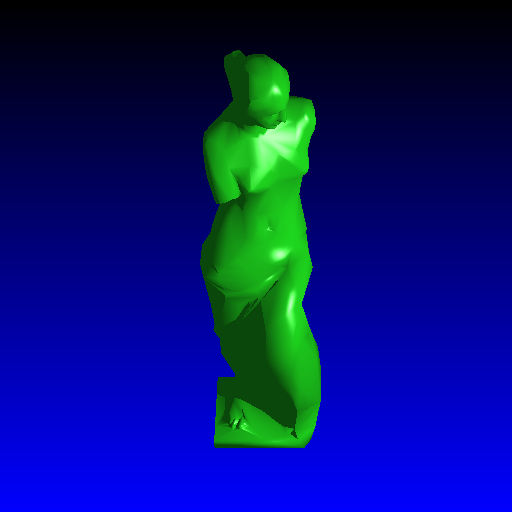

Objective 15:
Makefile Optimized Build Settings and Discussion of All Optimizations
I was excited to find out that the Makefile I had been using all along had not been optimized! This Makefile was of course supplied to us with a -g debug flag to create executables with debug information. This was not required for the final renderings once I had completed development, so I switched to an optimized build using the -O2 flag instead. I did not expect a drastic improvement, but this did have quite a decent effect. I changed the -g compiler flag (which creates a debug build) to a -O2 flag, which creates an optimized build. I also played around with processor-specific flags, and the omit-frame-pointer flag but this did not appear to have much of an effect as compared with the change from -g to -O2.

I now have another image to show the optimizations up to this point.
In conclusion, my Raytracer uses the combination of the following 6 optimization methods:
As mentioned above, I got a whopping (I think that's a decent word to use here)
improvement of 275 times in render speed with my Venus De Milo mesh object, as compared with the initial Voxel implementation. Note that this is a bit inflated, as likely the initial Voxel implementation runtime was actually slower than just running the naive raytracing approach The table scene shows a total speedup of 80 times, which is also much more than I initially expected. To mention my Computer Graphics hero John Lasseter again, and his famous quote: "The art challenges technology and the technology inspires the art."... now that I have managed to make the Raytracer 80-275 times faster, I suppose that really just means that in the future I should strive to Raytrace images that are 80-275 times better that what I could Raytrace 3 weeks ago. :) On that note, I decided to render 380 frames to create an Animation for my final Extra Objective. |

Written by: Mike Jutan
CS 488 - Computer Graphics
University of Waterloo